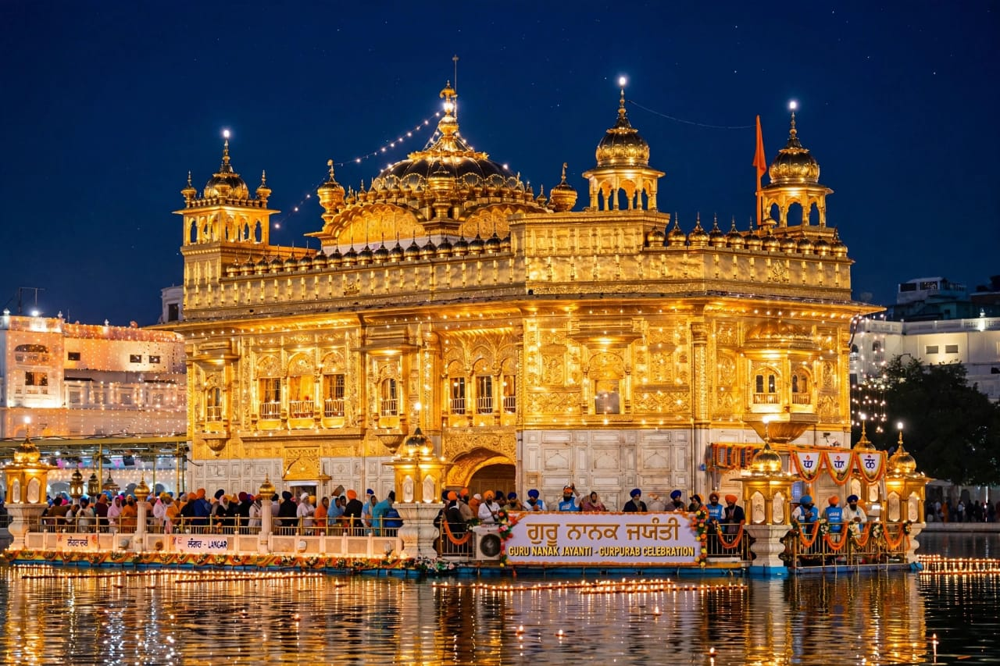
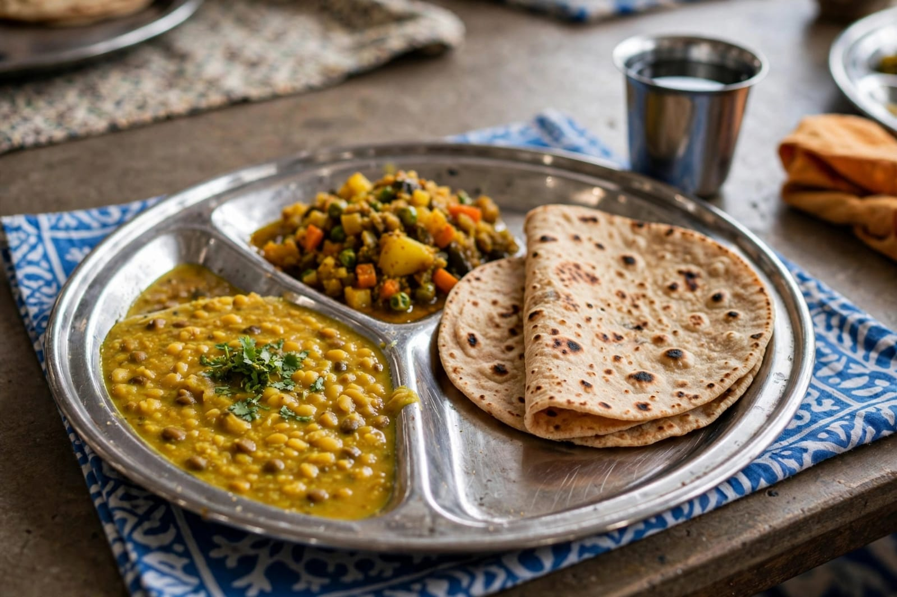

About Guru Nanak Jayanti
Guru Nanak Jayanti is an important festival celebrated by Sikh people. It marks the birth anniversary of Guru Nanak Dev Ji. Guru Nanak Dev Ji was the first Guru and founder of Sikhism. The festival is also known as Gurpurab. It is celebrated with great devotion and respect. Guru Nanak Dev Ji taught people about equality and kindness. He encouraged people to remember God. He taught that all people are equal. His teachings focused on truth and honest living. He also taught people to help others. Guru Nanak Jayanti is celebrated according to the Sikh calendar. The festival usually takes place during the month of Kartik. Devotees visit Gurudwaras during the festival. Special prayers are organized in Gurudwaras. The Guru Granth Sahib is respectfully read. Devotees listen to religious hymns. Kirtan is performed during the celebrations. Many Gurudwaras are decorated beautifully. Lights and flowers are used for decoration. People gather together for prayers. The festival creates a peaceful atmosphere. Devotees remember the teachings of Guru Nanak Dev Ji. They try to follow his teachings in daily life. The festival teaches the importance of honesty. It also teaches compassion and humility. People are encouraged to serve others. Community service is an important part of the celebrations. Volunteers help in preparing and serving food. Guru Nanak Jayanti promotes unity among people. It reminds people to respect everyone. The festival has great spiritual importance. People celebrate it with faith and devotion.
Guru Nanak Jayanti celebrations begin with prayers and religious activities. Many Gurudwaras organize special programs before the main day. A religious procession called Nagar Kirtan is held in many places. Devotees participate in the procession with great devotion. The Guru Granth Sahib is carried respectfully during the procession. Hymns and devotional songs are sung. People gather along the streets to watch the procession. Traditional instruments are also played. Volunteers provide water and food to people. On the main day, devotees visit the Gurudwara. Special prayers and Kirtan are organized. The teachings of Guru Nanak Dev Ji are remembered. Religious discussions may also be held. Many people participate in community service. Langar is an important part of the festival. Langar is a free community meal served at Gurudwaras. People from different backgrounds can sit together and eat. Everyone is treated equally during Langar. Volunteers help with cooking and serving food. Some people also help with cleaning the Gurudwara. The festival teaches the value of selfless service. It encourages people to help those in need. Guru Nanak Dev Ji gave importance to honest work. He also taught people to share with others. His teachings continue to inspire many people. Families visit Gurudwaras together. Children also learn about the life of Guru Nanak Dev Ji. Special decorations are made in many Gurudwaras. Devotional music creates a peaceful environment. People light lamps and decorate their homes. The festival is celebrated in many parts of India. It is also observed by Sikh communities around the world. Guru Nanak Jayanti is a festival of faith and service. It brings communities together. It spreads the message of peace and equality.
Guru Nanak Jayanti is celebrated by people of different age groups. Children learn about the teachings of Guru Nanak Dev Ji. Young people participate in Nagar Kirtan and community activities. Elders guide families in religious traditions. The festival gives importance to kindness and humility. It encourages people to live an honest life. People remember the importance of helping others. Community service is performed with devotion. Food is prepared and shared with everyone. Langar represents equality and togetherness. People sit together without differences. The festival promotes brotherhood and harmony. Devotees pray for peace and prosperity. They express gratitude and devotion. Guru Nanak Dev Ji's teachings focus on truth. His teachings also encourage sharing and caring. The festival reminds people to respect all human beings. It teaches that everyone should be treated equally. Guru Nanak Jayanti is a meaningful religious festival. It preserves Sikh traditions and values. It brings families and communities closer. The festival spreads happiness and spiritual awareness. It encourages people to serve society. Guru Nanak Jayanti is celebrated with great devotion. It is a festival of prayer, equality, service and peace.
Special Foods

Langar
Langar is a free community meal served at Gurudwaras.
Karah Prasad
Karah Prasad is a traditional sweet offering prepared with devotion.

Dal
Dal is commonly served as part of the community Langar meal.